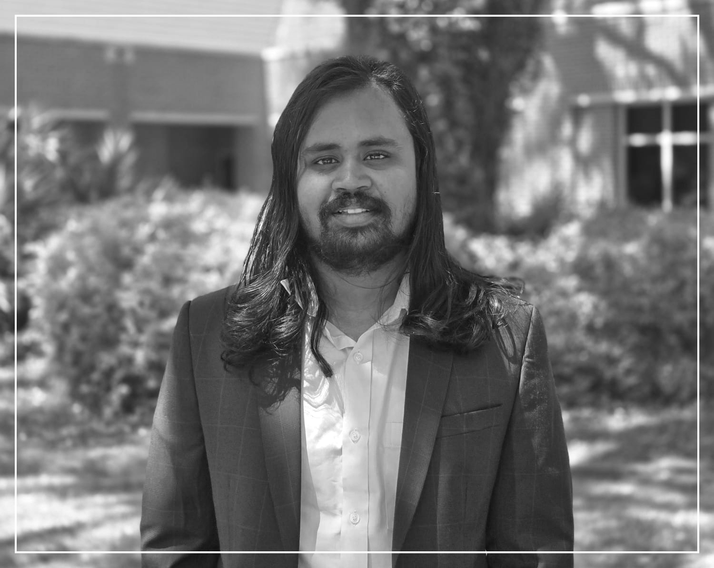
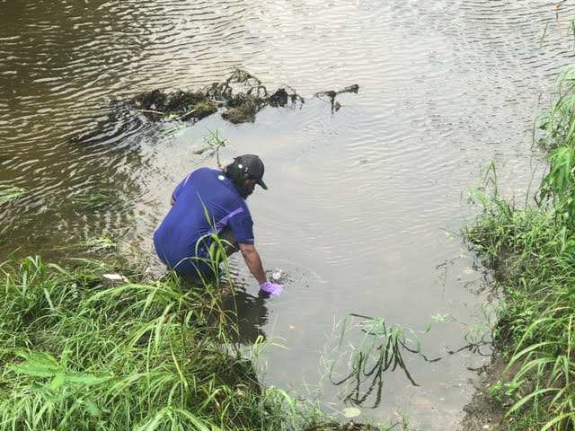
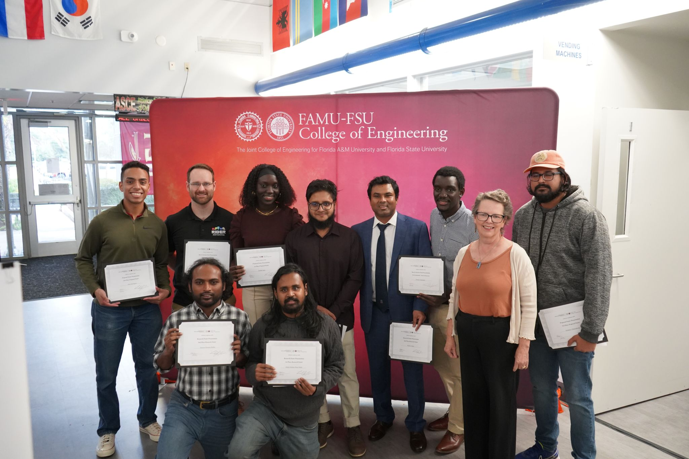
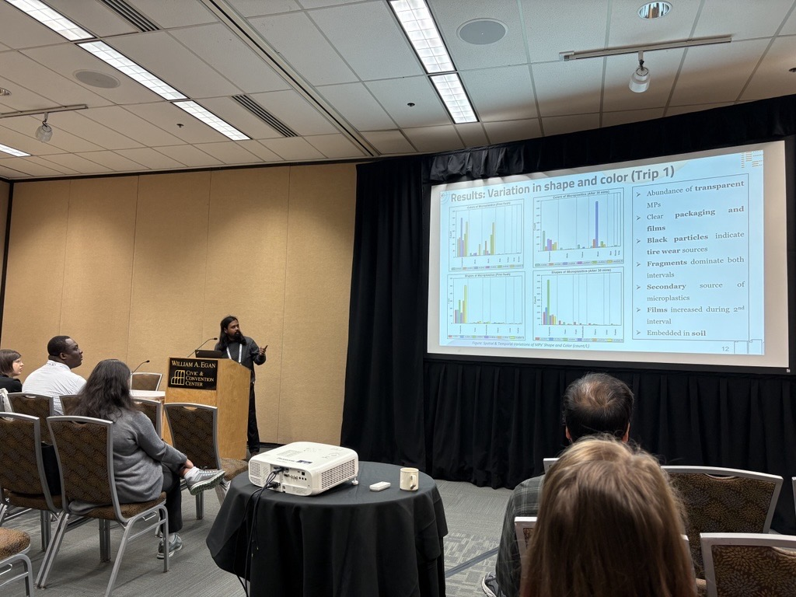
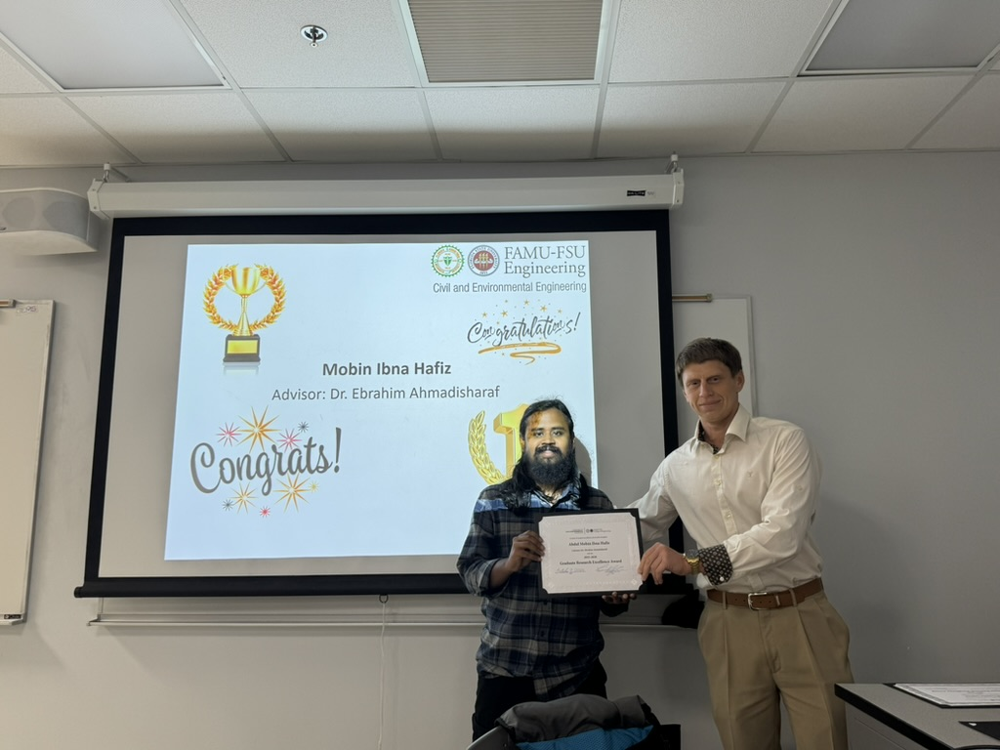
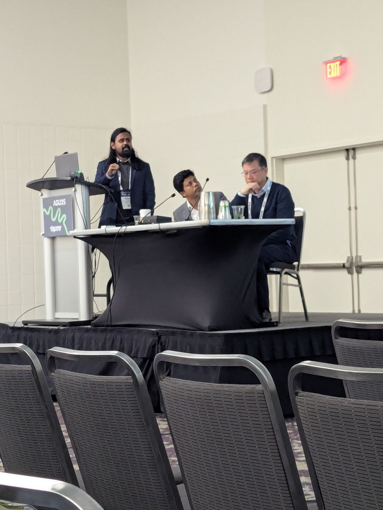
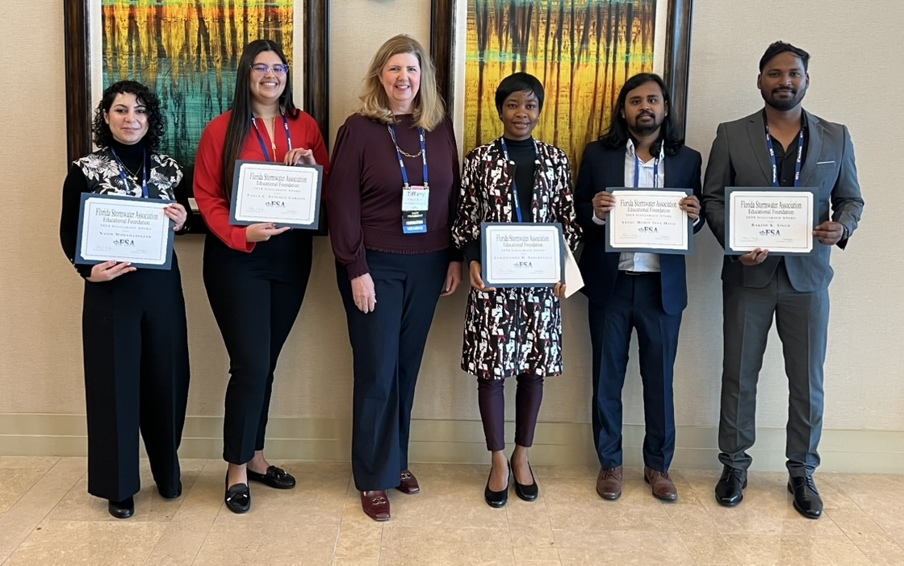

Abdul Mobin Ibna Hafiz
I am a Ph.D. candidate and Graduate Research Assistant at the Resilient Infrastructure and Disaster Response (RIDER) Center, FAMU-FSU College of Engineering. My research sits at the intersection of microplastic transport modeling, water quality, and urban stormwater management, where I combine field sampling, satellite remote sensing, and data-driven machine learning approaches to understand how pollutants move through our environment.
For my work, I collect urban stormwater runoff samples from agricultural farms and stormwater drainage networks, and use various satellite products and ML models to analyze environmental data. I feel a thrill in the fieldwork side of research — collecting samples even in challenging conditions feels like an adventure to me. I wish to be involved in research that takes me to remote places of the world to collect samples for microplastic research, like the Arctic.
Before joining FSU, I worked as a Research Associate at the Institute of Water and Flood Management (IWFM), Bangladesh University of Engineering and Technology (BUET), on the UKRI-funded ’Living Deltas Hub’ project, where I studied the effects of environmental change on livelihoods in the Sundarbans Delta. I hold a B.Sc. in Civil Engineering from BUET.
Outside of research, I enjoy watching films, reading books, and love to travel to new places.
- Presenting at IEEE IGARSS 2026 in Washington, DC
- CEE Graduate Student Research Excellence Poster Competition (Fall 2025) — First Prize
- CEE Graduate Research Excellence Award winner (2025)
- Review paper on microplastic export published in WIREs Water
- NSF RAPID grant awarded on Hurricane Debby microplastic transport
Curriculum Vitae
For a comprehensive overview of my academic background, research experience, publications, and professional activities, please see my full CV below.
Ongoing Research
Microplastic Transport in Urban Stormwater Systems
My primary research focuses on understanding how microplastics move through urban stormwater systems — from agricultural farms to drainage networks and eventually into larger water bodies. I collect runoff samples from urban agricultural sites and stormwater infrastructure across Tallahassee under varying weather conditions, characterizing the types, sizes, and concentrations of microplastics present. This fieldwork feeds into predictive models that estimate microplastic flux in urban environments, aiming to give cities actionable data for improving stormwater management practices. A key output of this work is the DURUM database, the first standardized global dataset of microplastics in urban stormwater runoff, compiling data from studies spanning 2018 to 2024. This database, currently under review at Nature Scientific Data, is designed to be a shared resource for researchers worldwide working on microplastic pollution.
Hurricane Impacts on Microplastic Dynamics
When Hurricane Debby struck Tallahassee in August 2024, our team mobilized quickly to capture what extreme weather events do to microplastic pollution in urban drainage systems. Funded by an NSF RAPID grant, this project tracks both the short- and mid-term changes in microplastic characteristics — concentration, polymer types, particle shapes — across the city's drainage network in the months following the hurricane. The results are revealing how extreme flooding reshuffles microplastic contamination patterns, information that becomes increasingly critical as climate change intensifies hurricane activity in the Gulf region.
Satellite-Based Environmental Monitoring with Machine Learning
Beyond field-based work, I develop machine learning models that leverage satellite remote sensing for environmental monitoring at scale. One line of this research uses satellite imagery and ML algorithms to detect marine microplastic accumulation zones in ocean environments, a problem that is nearly impossible to address through field sampling alone. A parallel project applies deep learning to high-resolution multi-temporal satellite imagery for detecting land cover changes caused by hurricane events, using Hurricane Michael as a case study. Together, these projects explore how computational tools can extend our observational reach for environmental problems that span continental and oceanic scales.
Selected Publications
Ibna Hafiz, A.M., Ahmadisharaf, E., Salehi, M., van Emmerik, T.H.M., Farner, J., Galloway, T., White, J.C., Zhang, Y., Han, N., Zongguo, W. "A Global Dataset of Microplastics in Urban Stormwater Runoff (2018–2024)." Nature Scientific Data (Under Review).
Ibna Hafiz, A.M., Datta, D.K., Bashir, A., Ahmadisharaf, E., Salehi, M. "Microplastic characteristics in urban agriculture under various weather patterns." Water Research (Under Review).
Ibna Hafiz, A.M., Ahmadisharaf, E., Salehi, M., Farner, J., White, J.C., Zeng, E.Y., & Nazari, B. (2025). "A Review of Processes and Models for the Export of Microplastics From Terrestrial to Aquatic Systems." WIREs Water, 12(1), e70004. DOI: 10.1002/wat2.70004
Rabby, S.H., Ahmadisharaf, E., Khan, M.I.S., Ibna Hafiz, A.M., Sun, X., Cohen, M., Rains, M., Van Emmerik, T.V., Salehi, M., Kranz, S., Wahl, T., Mishra, A., Sadegh, M., AghaKouchak, A., Golden, H., Moradkhani, H. "Impacts of compound hydroclimatic events on coastal water quality." Reviews of Geophysics (Under Review).
Salehi, M., Hafiz, A.M.I., Ahmadisharaf, E., Jazaei, F. (2025). "Release of Microplastics by Terrestrial Sources into Freshwater Environments." In Microplastic Pollution in Aquatic Media. Springer. DOI: 10.1007/978-981-95-0225-7_2
Selected Presentations
Ibna Hafiz, A.M., Ahmadisharaf, E., Salehi, M., Feng, D., Abdolali, A. (2026). "Satellite-based microplastic detection in marine environments using machine learning algorithms." IEEE IGARSS, Washington, DC. (Oral)
Ibna Hafiz, A.M., Jalilvand, E., Ahmadisharaf, E. (2026). "Deep learning-based land cover change detection following Hurricane Michael using high-resolution multi-temporal satellite imagery." IEEE IGARSS, Washington, DC. (Oral)
Ibna Hafiz, A.M., Salehi, M., Ahmadisharaf, E. (2026). "Standardizing microplastic data in urban runoff: Development and applications of the DURUM database." EWRI Congress, Mobile, AL. (Oral)
Ibna Hafiz, A.M., Ahmadisharaf, E., Salehi, M., Feng, D. (2025). "Satellite-Based Marine Microplastic Detection Using Machine Learning Algorithms." AGU Annual Meeting 2025, New Orleans, LA. (Oral)
Ibna Hafiz, A.M., Bashir, A., Zolfaghari, S., Legrand, F., Ahmadisharaf, E., Salehi, M. (2025). "Hurricane-Induced Microplastics Contamination in Urban Drainage Systems: A Case Study of Tallahassee following Hurricane Debby." EWRI Congress 2025, Anchorage, AK. (Oral)
Awards
- CEE Graduate Research Excellence Award (2025) — $1,000
- Florida Stormwater Association Educational Foundation Scholarship (2024) — $2,000
- Florida State University Dissertation Research Grant — $1,000
Media / Gallery








Contact
FAMU-FSU College of Engineering
2525 Pottsdamer St.
Tallahassee, FL 32310
Ahmadisharaf Research Lab
Florida Virtual Campus
1753 W Paul Dirac Dr
Tallahassee, FL 32310
Copyright 2025 Abdul Mobin Ibna Hafiz.
Powered by Start Bootstrap from Blackrock Digital
and Typed.js from Matt Boldt.